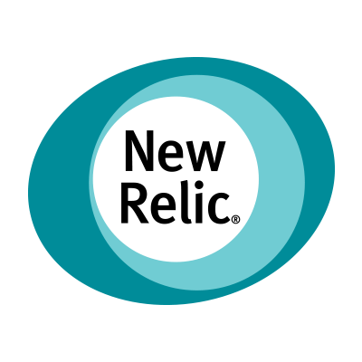
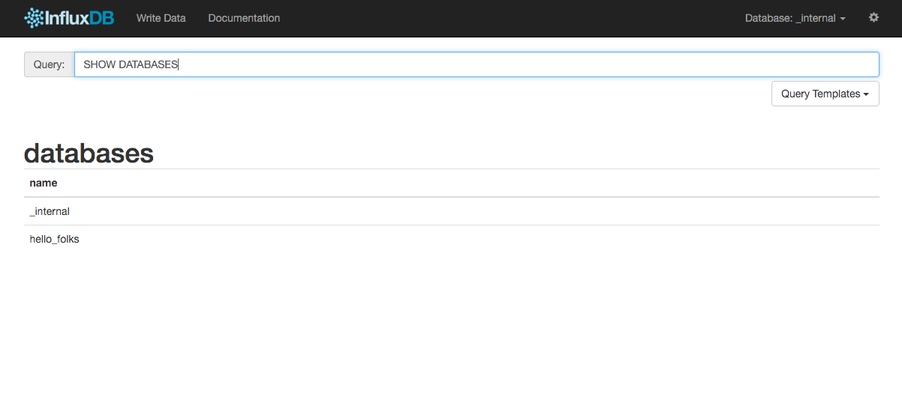

Listen your infrastructure
and please sleep
Gianluca Arbezzano
Software Engineer at CurrencyFair
OpenSource maintainer


Widespread monitoring tool
tail -f /var/log/nginx/errors.log
2016/04/15 15:42:46 [warn] 2330#0: *167 using uninitialized variable,
client: 10.0.1.1, server: localhost.dev, request: "POST /auth HTTP/1.1",
host: "localhost"
2016/04/15 15:44:44 [error] 2330#0: *171 FastCGI sent in stderr: "
PHP message: PHP Fatal error: Uncaught exception
'RuntimeException' with message 'All broken)[500]'
in /var/www/my/project.php:237
Stack trace:
#0 /var/www/index.php:45 ObjectService->flush()
#1 [internal function] ->save()
Expensive to store
Difficult to index
Difficult, not impossible


They are awesome for some use cases
- extract information
- They can be "human like"
- ... you have your personal list
we are here to speak about time series
[
{
"name": "log_lines",
"columns": ["time", "line"],
"point": [1400425947368, "here's some useful log info"]
}
]
Only one word: EASY
{
"name": "cpu_percent_use",
"columns": ["value"],
"point": 40
}
Cheap
If you try to reduce your time series to a timestamp and a value
Scalable
The time is a perfect shard key
There are few tools and services

InfluxDB
- database optimized to manage time series
- telegraf to collect and push metrics
- kapacitor to trigger alerts
- opensource
- pure go
- made easy
line protocol
serialization protocol created to be slim
[key] [fields] [timestamp]
temperature,machine=unit internal=3,external=10 1434055562000000035
UDP and TCP protocol
Corley\Benchmarks\InfluxDB\AdapterEvent
Method Name Iterations Average Time Ops/second
------------------------ ------------ -------------- -------------
sendDataUsingHttpAdapter: [1,000 ] [0.0026700308323] [374.52751]
sendDataUsingUdpAdapter : [1,000 ] [0.0000436344147] [22,917.69026]
Query SQL like
SELECT value
FROM cpu_load_short
WHERE region='us-west'
continuous query
CREATE CONTINUOUS QUERY minnie ON world
BEGIN SELECT min(mouse) INTO min_mouse
FROM zoo GROUP BY time(30m) END
Telegraf
Telegraf is a plugin-driven server agent for collecting and reporting metrics
[global_tags]
dc = "do-ams-3"
name = "db1"
[agent]
interval = "10s"
[[outputs.influxdb]]
urls = ["http://localhost:8086"]
precision = "s"
[[inputs.cpu]]
percpu = true
totalcpu = true
Kapacitor
Kapacitor is a data processing engine. It can process both stream and batch data
Follow your metrics and send notification when one of them has a strange behavior
Kapacitor
stream
|from()
.measurement('cpu')
|alert()
.crit(lambda: "usage_idle" < 70)
.log('/tmp/alerts.log')
InfluxDB admin panel
To manage your data
Graphite
That's it
A series of great tools to monitor your applications and your infrastructure